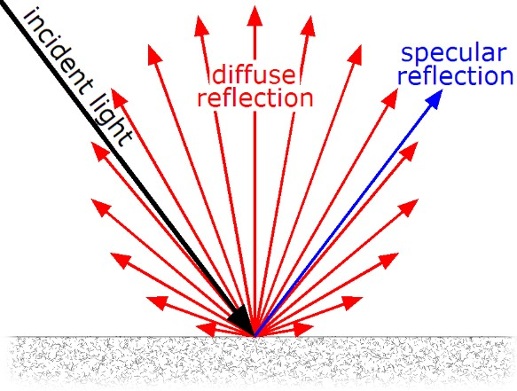
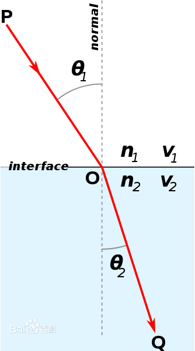

Physical Theory
Table of Contents
Physical Theory note.
<!– more –>
力学
运动学 Kinematics
运动学（Kinematics），从几何的角度（指不涉及物体本身的物理性质和加在物体上的力) 描述和研究物体位置随时间的变化规律的力学分支。以研究质点和刚体这两个简化模型的运动为基础，并进一步研究变形体（弹性体、流体等） 的运动。
动力学 Dynamics
动力学（Dynamics）是理论力学的一个分支学科，它主要研究作用于物体的力与物体运动的关系。动力学的研究对象是运动速度远小于光速的宏观物体。
冲量 Impulse
冲量（Impulse）是力的时间累积效应的量度，是矢量。如果物体所受的力是大小和方向都不变的恒力 F，冲量 I 就是 F 和作用时间 t 的乘积。如果 F 的大小、方向是变动的，冲量 I 应用矢量积分运算。冲量的单位在国际单位制中是千克·米每秒（kg·m /s）。通常用 I(大写的 i)表示。
电磁学
麦克斯韦方程组
通量 散度 环流量 旋度
- 通量 是单位时间内通过的某个曲面的量
- 散度 是通量强度
- 环流量 是单位时间内环绕的某个曲线的量
- 旋度 是环流量强度
参考资料
- 你也可以理解麦克斯韦方程组 https://zhuanlan.zhihu.com/p/41672471
- 散度和旋度的物理意义是什么？https://www.zhihu.com/question/21912411
光学相关物理概念
介质 (Transmission medium)
一种物质存在于另一种物质内部时，后者是前者的介质。
某些波状运动，如声波、光波、电磁波中，称传播的物质为这些波状运动的介质。
介质分为光介质、电介质、机械波介质、磁介质等等。
辐射 (Radiation)
辐射(Radiation)：的是能量以波或次原子粒子移动的型态，在真空或介质中传送。包含：
- 电磁波 : 微波、可见光、X 射线、γ射线(γ)
- 粒子辐射: α射线（α）、β射线（β）、中子辐射
- 声辐射: 超声波、声波、地震波
- 引力波
辐射度学 (Radiometry)
辐射度学(Radiometry)：研究辐射量及其测定的学科。
辐射量(Radiant quantity)：用能量单位度量的与辐射有关的各种量。
能量（Energy）
能量（Energy），用符号 Q 表示，单位为焦耳，每个光子都具有一定量的能量，和频率相关，频率越高，能量也越高。
功率（Power）
功率（Power）:表示单位时间内做的功。单位瓦特（Watts），或者焦耳/秒（J/s）。
辐射度学中，辐射功率（Radiant Power）也被称为辐射通量(Radiant Flux)或者通量（Flux），指单位时间内通过表面或者空间区域能量的总量，用符号 \(\Phi\) 表示，定义 \(\Phi = \frac{dQ}{dt}\) ,单位为 W（瓦），即 1W=J/s（焦耳每秒）。(辐射度学中，功率和通量被混合在一起表示一个概念了)
通量 (Flux)
通量 (Flux) :在流体运动中，通量表示单位时间内流经某单位面积的某属性量，是表示某属性量输送强度的物理量。
辐照度和辐出度（Irradiance Radiosity）
辐照度（Irradiance）是电磁辐射入射于曲面时每单位面积的功率。
辐出度（Radiant Existance）也称为辐射出射度、辐射度（Radiosity）。辐射出射度（radiant emittance，radiant exitance）是从曲面辐射出的每单位面积的功率。
采用国际单位制，这些物理量的单位为瓦特每平方米（ \(W/m^2\) ）。
辐射通量密度(Radiative Flux Density 也被称为 Radiative Flux 或 Radiation Flux)，指单位时间内，单位面积上所接受的辐射能量。又称辐照通量密度。符号为 E。
当辐射通量发生在一个表面时，通常被称为辐照度(Irradiance)。当通量从一个表面发出时，被称为辐出度(Radiant emittance、Radiant emittance)。表面反射的辐照度和接收到的辐照度的比值被称为反射率(albedo)。
辐射强度（Radiant Intensity）
辐射强度（Radiant Intensity）指通过单位立体角的辐射通量。
之所以引入辐射强度，是因为有时候要度量通过一个点的通量的密度，但因为点的面积为 0，无法使用辐照度，所以引入辐射强度。辐射强度不会随距离变化而变化，不像点光源的辐照度会随距离增大而衰减，这是因为立体角不会随距离变化而变化。
辐射率 (Radiance)
辐射率是衡量物体表面以辐射形式释放能量相对强弱的能力。物体的辐射率等于物体在一定温度下，单位面积辐射的能量与同一温度下黑体辐射能量之比。黑体的辐射率等于 1，其他物体的辐射率介于 0 和 1 之间。
光源的辐射率(Radiance)，是描述非点光源时光源单位面积强度的物理量，定义为在指定方向上的单位立体角和垂直此方向的单位面积上的辐射通量，记为 L。
电磁波
光波
光波，通常是指电磁波谱中的可见光。可见光谱没有精确的范围；一般人的眼睛可以感知的电磁波的波长在 400～760nm 之间，但还有一些人能够感知到波长大约在 380～780nm 之间的电磁波。
光在真空中的传播速度为 c=3×108m/s，是自然界中物质运动的最快速度。
光波是横波，其中电场强度 E 和磁感应强度 B（或磁场强度 H）彼此相互垂直，并且都与传播方向垂直。
反照率 反射系数 (Albedo) 反射率 Diffuse
表面的反照率定义为表面反射的辐照度和表面接收的辐照度的比值。
物体反射的辐射能量占总辐射能量的百分比，称为反射率。 不同物体的反射率也不同，这主要取决于物体本身的性质(表面状况），以及入射电磁波的波长和入射角度，反射率的范围总是反射率小于等于 1。
Albedo （材质的 Albedo，物体表面的 Albedo）
白光包含了所有可见光波长的光。当白光照射到物体表面上时，一部分颜色会被吸收，剩余的部分则被反射。物体的颜色可以被定义为反射光所占入射光的比例。Albedo 就是此处所说的物体颜色。
举例：橘子被白光照射后其吸收了 90%的蓝光 40%的绿光以及 10%的红光，则 90%红光，60%绿光，10%蓝光被反射。所以，橘子的 Albedo 为(0.9, 0.6, 0.1)
Diffuse VS Albedo (Physical Based Rendering 书中 BxDF 的 rho)
Albedo 是入射光被反射后离开表面的部分。
Diffuse reflection 是入射光在多个方向上的反射光，而不止是镜像方向上的反射光。如果你渲染的物体只包含理想的 diffuse reflectance,此时 albedo 和 diffuse 是相等的。但是，通常一个表面会 diffusely 反射一部分光，另一部分则以 specularly 或方向独立的方式进行反射，此时 diffuse 只是 albedo 的一部分。

Diffuse map VS Albedo map
最新的 PBR 材质工作流，通常使用 Albedo 这个术语, Diffuse 术语则在之前的渲染技术中使用。
albedo map 存储的是物体的纯色，而 diffuse map 则是在漫反射光照下物体的颜色。
参考资料
https://zh.wikipedia.org/wiki/%E5%8F%8D%E7%85%A7%E7%8E%87
https://baike.baidu.com/item/%E5%8F%8D%E5%B0%84%E7%8E%87
https://en.wikipedia.org/wiki/Reflectance
反射率是什么？https://zhidao.baidu.com/question/26676366.html
反射率和反照率 https://www.jianshu.com/p/f4eeae6eabc2
https://gis.stackexchange.com/questions/36726/difference-between-albedo-and-surface-reflectance
几何光学
反射
反射：当光在两种物质分界面上改变传播方向又返回原来物质中的现象，叫做光的反射。
光的反射定律
- 光反射时，反射光线、入射光线、法线都在同一平面内。（同一平面内）
- 光反射时，反射光线、入射光线分居法线两侧。（居两侧）
- 光反射时，反射角等于入射角。（角相等）（∠r=∠i）
菲涅尔反射
“菲涅尔”是一个人的名字，因为他发现了一个有关反射的光学现象，这个现象就用这个人的名字命名了。那么，是什么现象呢？
就是反射/折射与视点角度之间的关系。如果你站在湖边，低头看脚下的水，你会发现水是透明的，反射不是特别强烈；如果你看远处的湖面，你会发现水并不是透明的，但反射非常强烈。这就是“菲涅尔效应”。 简单的讲，就是视线垂直于表面时，反射较弱，而当视线非垂直表面时，夹角越小，反射越明显。如果你看向一个圆球，那圆球中心的反射较弱，靠近边缘较强。不过这种过度关系被折射率影响。
如果不使用“菲涅尔效应”的话，则反射是不考虑视点与表面之间的角度的。 注意，在真实世界中，除了金属之外，其它物质均有不同程度的“菲涅尔效应”。
所谓菲涅尔反射就是用波动的理论来解释光的反射。 主要包括一些电磁场的边界传输条件，比如 P 矢量和 S 矢量的反射，菲涅尔用波动学说第一次从本质上解释了光的传播，而之前人们只能从宏观上进行试验，无法从微观的理论上获得支持。然而缺少微观理论支持的定律总是空虚的，随时都可能被推翻的。
菲涅尔方程（Fresnel Equations）
折射
折射：光从一种透明介质斜射入另一种透明介质时，传播方向一般会发生变化，这种现象叫光的折射。
折射率
折射率，光在真空中的传播速度与光在该介质中的传播速度之比。材料的折射率越高，使入射光发生折射的能力越强。
复折射率
复折射率，又称光纳，吸收性介质最主要的光学常数。吸收性介质最主要的光学常数。它是一个复数，符号 N'，可用 N'=N-iK 表示。式中实数部分 N 为吸收性介质的折射率，它决定于光波在吸收性介质中的传播速度；虚数部分的 K 决定于光波在吸收性介质中传播时的衰减（光能的吸收），叫做吸收系数。
全反射
光由相对光密介质射向相对光疏介质，且入射角大于临界角，即可发生全反射。
光的折射定律 Snell's Law

散射
散射：光束通过不均匀媒质时，部分光束将偏离原来方向而分散传播，从侧向也可以看到光的现象，叫做光的散射。散射是多重折射和反射的结果。
费马最短时间原理
在从一点行进到另一点的所有可能路径中，光走的是需时最短的路径。
比尔定律 Beer Law
A=lg(1/T)=Kbc
A 为吸光度
T 为透射比(透光度),它是出射光强度（I）比入射光强度(I0).
K 为摩尔吸收系数.它与吸收物质的性质及入射光的波长λ有关.
c 为吸光物质的浓度,单位为 mol/L，b 为吸收层厚度，单位为 .【b 也常用 L 替换，含义一致】
物理意义是当一束平行单色光垂直通过某一均匀非散射的吸光物质时,其吸光度 A 与吸光物质的浓度 c 及吸收层厚度 b 成正比，而透光度 T 与 c、b 成反比。
参考资料
Q&A
金属为什么有金属光泽？
金属和非金属反射光的差异
金属作为最常见导电材质，有几点特性值得被特殊提及。 首先，金属大多比绝缘体更容易发生镜面反射。导体一般的镜面反射率高达 60-90%，而绝缘体一般在 0-20%的范围。这种高反射率阻止了大部分光到达其内部产生散射，使得金属看起来很闪亮。 其次，导体的反射率在可见光谱中呈现多样变化，使得它们的反射光具有颜色（白光照射下）。反射光具有颜色很奇怪，但确实在我们日常的材质中出现（比如，金、铜和黄铜）。绝缘体大部分情况下不会呈现出这种效果，它们的反射光的颜色是一般跟光源颜色一致。 最后，导体通常对进入其表面的光是吸收而不是散射。这意味着理论上导体不会表现出任何的漫反射，但实际中由于金属表面氧化等原因，还是会表现出部分散射效果。根据金属的这些特性呢，PBR 着色系统用“metalness”作为输入来表示材料的金属程度，而不是 albedo & reflectivity。
Unity 的 PBR 扩展（一）——理论基础 cn https://zhuanlan.zhihu.com/p/49564527
Unity 的 PBR 扩展（一）——理论基础 en https://marmoset.co/posts/basic-theory-of-physically-based-rendering/
为什么电磁波无法穿透导体？
简单来说，是因为金属在电磁波驱动下产生电流，进而焦耳热消耗掉了进入金属内部的电磁波的能量。。这个过程发生的特征尺度在微米量级，可以认定宏观的金属内部是没有电磁波的。
https://www.zhihu.com/question/264770913?sort=created
色彩相关
三原色原理 three-primary colours
任何光都可以用红、绿、蓝这 3 种光按不同的比例混合而成，这就是三原色原理。三原色的原理可解释如下：
- 自然界的任何光色都可以由 3 种光色按不同的比例混合而成。
- 三原色之间是相互独立的，任何一种光色都不能由其余的两种光色
来组成。
- 混合色的饱和度由 3 种光色的比例来决定。混合色的亮度为 3 种光色的亮度之和。
三棱镜折射分解太阳光为 7 种色光的原理
介质的折射率随光的波长而变。不同颜色的光有不同的波长，所以有不同的折射率，发生折射后光线的偏离角度就会不同，从而分离开来。
https://baike.baidu.com/item/%E5%85%89%E7%9A%84%E8%89%B2%E6%95%A3
加色法与减色法比较
| 混合法 | 加色法 | 减色法 |
|---|---|---|
| 原色 | 色光 | 色料 |
| 原色色相 | 红（R）、绿(G)、蓝(B) | 品红、黄、青（M、Y、C） |
| 原色与色谱关系 | 每一原色仅辐射一个光谱区色光 | 每一原色吸收一个光谱区色光，反射两个光谱区色光 |
| 颜色混合时色彩的基本变化规律 | 红+绿=黄 蓝+红=品红 绿+蓝=青 红+绿+蓝=白 | 青+品红=蓝 黄+青=绿 品红+黄=红 品红+黄+青=黑 |
| 混合效果 | 光源之间混合，新颜色的亮度为各光的亮度和，颜色饱和 | 两原色叠合新颜色的亮度降低，彩度降低 |
| 用途 | 颜色的测量和匹配 彩色电视 剧场照明 | 对彩色原稿的分色 彩色印刷 颜色混合 |
Q&A
每一原色吸收一个光谱区色光，反射两个光谱区色光
黄色 是红色和绿色的互补色。黄色染料吸收蓝色光，反射红色光和绿色光。
青色 是绿色和蓝色的互补色。青色染料吸收红色光，反射蓝色光和绿色光。
品红 是红色和蓝色的互补色。品红染料吸收绿色光，反射红色光和蓝色光。
参考资料
- 三原色原理 https://baike.baidu.com/item/%E4%B8%89%E5%8E%9F%E8%89%B2%E5%8E%9F%E7%90%86
- RGB 色彩模式的奥秘，你真的弄懂了么？http://mp.weixin.qq.com/s?__biz=MzU0NDA2MTcxOA==&mid=2247491617&idx=1&sn=9503df52f9020380a9087ed1ba713cbb&source=41#wechat_redirect
- 拜耳阵列（拜耳马赛克）http://blog.csdn.net/youmingyu/article/details/52572977
- 色彩混合 https://baike.baidu.com/item/%E8%89%B2%E5%BD%A9%E6%B7%B7%E5%90%88
可见光 颜色和波长
光的颜色是它的波长决定的,光的波长是以纳米为单位，以下是光的颜色和它的波长：
中红外线红光
波长 4600nm - 1600nm –不可见光
低红外线红光
波长 1300nm - 870nm –不可见光
波长 850nm - 810nm -几乎不可见光
近红外线光
波长 780nm -当直接观察时可看见一个非常暗淡的樱桃红色光
波长 770nm -当直接观察时可看见一个深樱桃红色光
波长 740nm -深樱桃红色光
红色光
波长 700nm - 深红色
波长 660nm - 红色
波长 645nm - 鲜红色
波长 630nm -
波长 620nm - 橙红
橙色光
波长 615nm - 红橙色光
波长 610nm - 橙色光
波长 605nm - 琥珀色光
黄色光
波长 590nm - “钠“黄色
波长 585nm -黄色
波长 575nm - 柠檬黄色/淡绿色
绿色
波长 570nm - 淡青绿色
波长 565nm - 青绿色
波长 555nm -
波长 550nm - 鲜绿色
波长 525nm - 纯绿色
蓝绿色
波长 505nm - 青绿色/蓝绿色
波长 500nm - 淡绿青色
波长 495nm - 天蓝色
蓝色
波长 475nm - 天青蓝
波长 470nm - 460nm-鲜亮蓝色
波长 450nm - 纯蓝色
蓝紫色
波长 444nm - 深蓝色
波长 430nm - 蓝紫色
紫色
波长 405nm - 纯紫色
波长 400nm - 深紫色
近紫外线光
波长 395nm -带微红的深紫色
UV-A 型紫外线光
波长 370nm -几乎是不可见光,受木质玻璃滤光时显现出一个暗深紫色。
色域 颜色空间
色域是对一种颜色进行编码的方法，也指一个技术系统能够产生的颜色的总和。
“色彩空间”一词源于西方的“Color Space”，又称作“色域”，色彩学中，人们建立了多种色彩模型，以一维、二维、三维甚至四维空间坐标来表示某一色彩，这种坐标系统所能定义的色彩范围即色彩空间。 我们经常用到的色彩空间主要有 RGB、CMYK、Lab 等。
绝对色彩空间就是不依赖任何外部因素就可以准确表示颜色的色彩空间。Lab 为绝对颜色空间，RGB 为非绝对色彩空间。
Lab 色彩模型是由亮度（L）和有关色彩的 a, b 三个要素组成。L 表示亮度（Luminosity），a 表示从洋红色至绿色的范围，b 表示从黄色至蓝色的范围。L 的值域由 0 到 100，L=50 时，就相当于 50%的黑；a 和 b 的值域都是由+127 至-128，其中+127 a 就是红色，渐渐过渡到-128 a 的时候就变成绿色；同样原理，+127 b 是黄色，-128 b 是蓝色。所有的颜色就以这三个值交互变化所组成。例如，一块色彩的 Lab 值是 L = 100，a = 30, b = 0, 这块色彩就是粉红色。
HSV
色相 Hue
色相就是色彩所呈现出来的质的面貌，就是颜色的名字。
饱和度 Saturation
饱和度是指颜色的纯度。
含色成分越大，饱和度越大；消色成分越大，饱和度越小。纯的颜色都是高度饱和的，如鲜红，鲜绿。混杂上白色，灰色或其他色调的颜色，是不饱和的颜色，如绛紫，粉红，黄褐等。完全不饱和的颜色根本没有色调，如黑白之间的各种灰色。
明度或亮度 value or brightness or luminance
明度或亮度 指颜色的明亮程度。
应用
利用 HSV 对 RGB 颜色进行变换
- Fast branchless RGB to HSV conversion in GLSL http://lolengine.net/blog/2013/07/27/rgb-to-hsv-in-glsl
- HSV color transforms https://beesbuzz.biz/code/hsv_color_transforms.php
- Matrix Operations for Image Processing http://www.graficaobscura.com/matrix/index.html
亮度
Luminous Intensity 发光强度
在物理中，辐射强度和辐射度可以表示非常广的波长范围。在颜色科学中，我们只对可见范围的能量感兴趣。可见光范围内，和辐射强度(Radiant intensity)对应的物理量就是发光强度(Luminous Intensity)
Luminance
Luminance 是单位投影区域的发光强度(Luminous Intensity),和物理中的辐射率相对应。
Lightness 人眼感觉的亮度
根据人眼机理及人的视觉模型，人眼感知的主观亮度和实际的客观亮度之间并非完全相同，但是有一定的对应关系。人眼能够感觉的亮度范围（称为视觉范围）极宽，从千分之几尼特直到几百万尼特。其所以如此之宽，是由于依靠了瞳孔和光敏细胞的调节作用。瞳孔根据外界光的强弱调节其大小，使射到视网膜上的光通量尽可能是适中的。在强光和弱光下，分别由锥状细胞和杆状细胞作用，而后者的灵敏度是前者的 1 万倍。在不同的亮度环境下，人眼对于同一实际亮度所产生的相对亮度感觉是不相同的。例如对同一电灯，在白天和黑夜它对人眼产生的相对亮度感觉是不相同的。另外，当人眼适应了某一环境亮度时，所能感觉范围将变小。例如，在白天环境亮度 10，000 特时，人眼大约能分辨的亮度范围为 200～20，000 尼特，低于 200 尼特的亮度同感觉为黑色。而夜间环境为 30 尼特时，可分辨的亮度范围为 1～200 尼特，这时 100 尼特的亮度就引起相当亮的感觉。只有低于 1 尼特的亮度才引起黑色感觉。
人眼感知的亮度与光强成指数关系，而物理学定义的亮度与光强成正比。
Value
Value 用于度量
色觉
人眼可见光线的最新波长是 390～780 毫微米，一般可辨出包括紫、蓝、青、绿、黄、橙、红 7 种主要颜色在内的 120～180 种不同的颜色。
辨色主要是视锥细胞的功能。因视锥细胞集中分布在视网膜中心部，故该处辨色能力最强，越向周边部，视网膜对绿、红、黄、蓝 4 种颜色的感受力依次消失。
由物理学可知，用红、绿、蓝 3 种色光作适当混合，可产生白光以及光谱上的任何颜色。关于色觉的机理，目前多用“三原色学说”来解释。这个学说认为，在视网膜上存在着分别对红、绿和蓝三种光线的波长特别敏感的三种视锥细胞或相应的感光色素，当不同波长的光线入眼时，可引起敏感波长与之相符或相近的视锥细胞发生不同程度的兴奋，于是在大脑产生相应的色觉；三种视锥细胞若受到同等程度的刺激，则产生白色色觉。